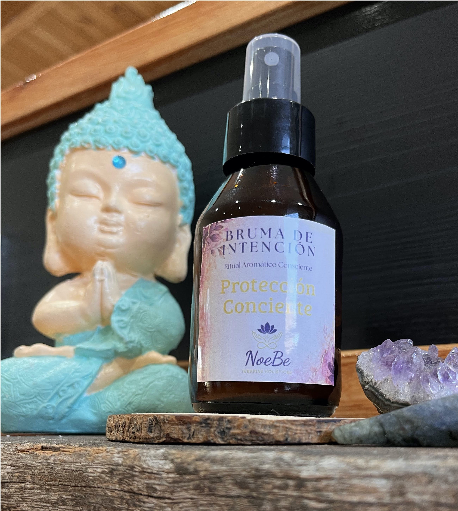
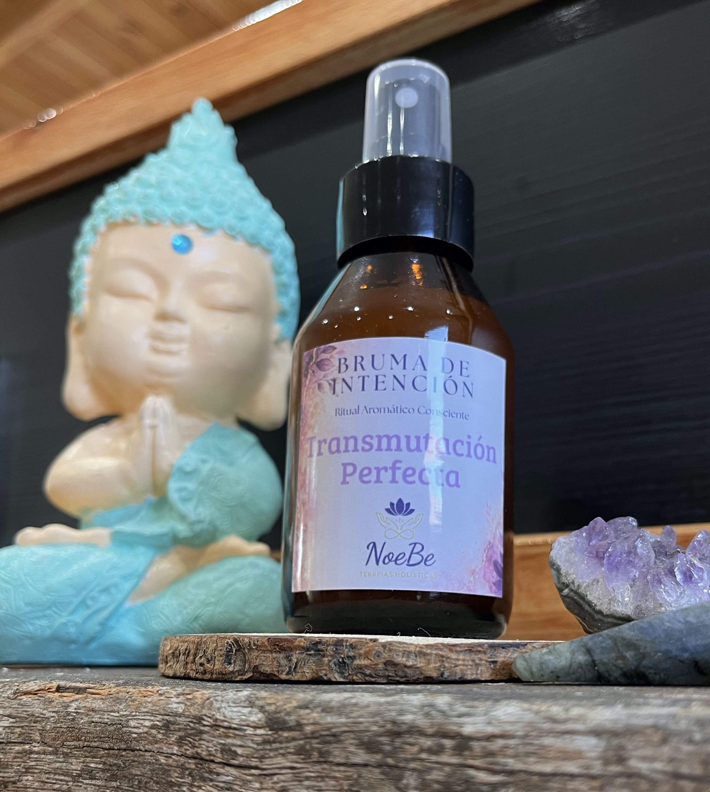
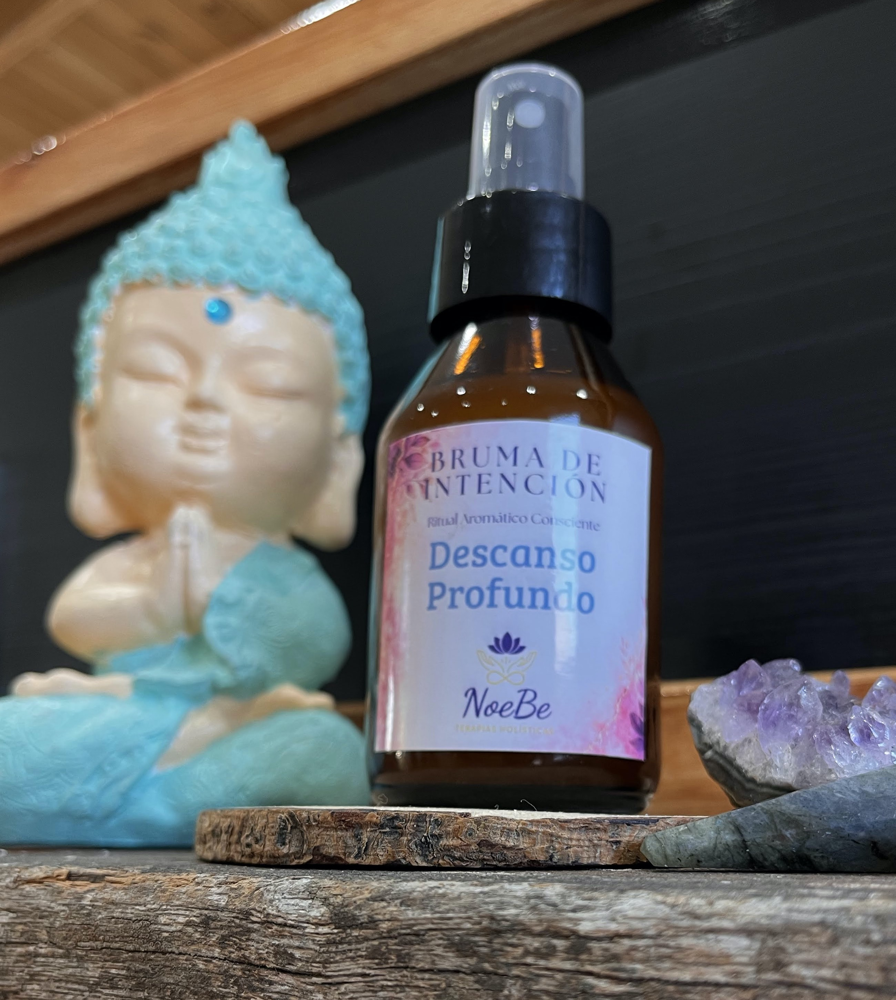

Quiero compartirles algo que vengo gestando hace tiempo, con mucho amor y mucha intención.
Nacieron las Brumas de Intención.
Y son Mucho más que un perfume
Están creadas con esencias puras, seleccionadas de forma consiente, desde la aromaterapia,
entendiendo qe cada aroma y cada planta trabajan a nivel físcio, emocional y energético
3 brumas que invitan a conectar, a sentir y a relajarnos, cada una con una intención diferente.
Bruma diseñada para resguardar y fortalecer la energía personal.
Ideal antes de reuniones, jornadas laborales o situaciones que requieran claridad y estabilidad.
Esencias: Eucalipto, Romero y Jengibre.

Pensada para liberar cargas y renovar la energía.
Ideal cuando te sentís cansada, abrumada o con mucha carga mental.
Ayuda a limpiar, despejar y volver a un estado más liviano.
Esencias: Naranja, Limón y Sándalo.

Invita a la relajación y al descanso.
Ideal para utilizar al finalizar el día o antes de dormir.
Para cerrar el día, bajar, relajar y acompañar el momento de descanso.
Esencias: Lavanda, Melisa y vainilla.

Elaboradas con aceites esenciales puros y de alta calidad.
Inspiradas en la aromaterapia y el bienestar energético.
Incluyen una intención y un ritual en cada frasco.
Cada frasco, además, tiene su propio ritual y una intención para repetir al usarla
Nada está puesto al azar: cada mezcla fue pensada para acompañar esa energía en particular.
Y algo importante: los frascos son reutilizables. Podés traerlos cuando quieras recargar y así acompañamos un consumo más consciente